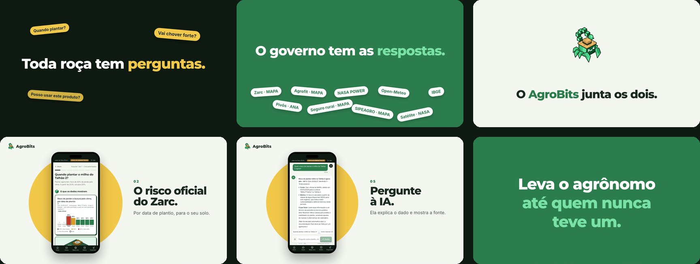
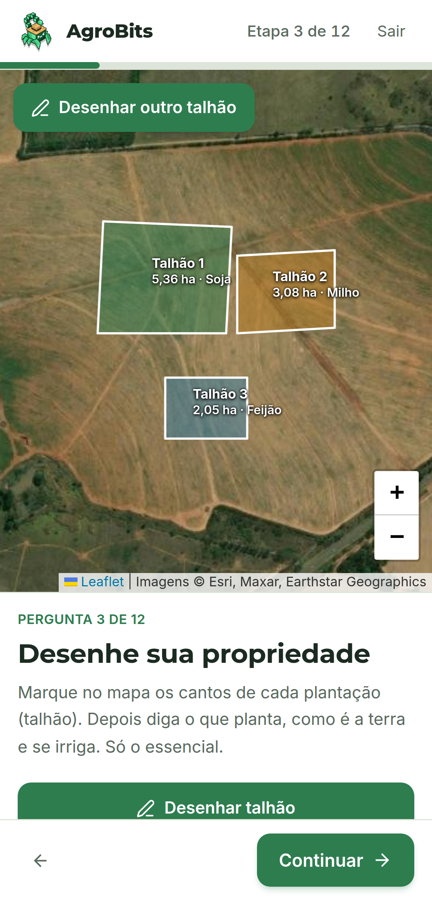
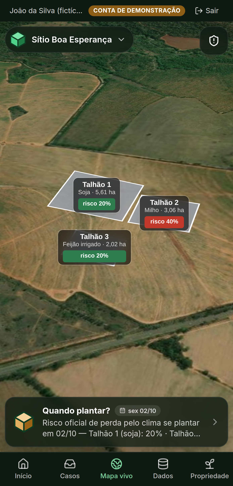
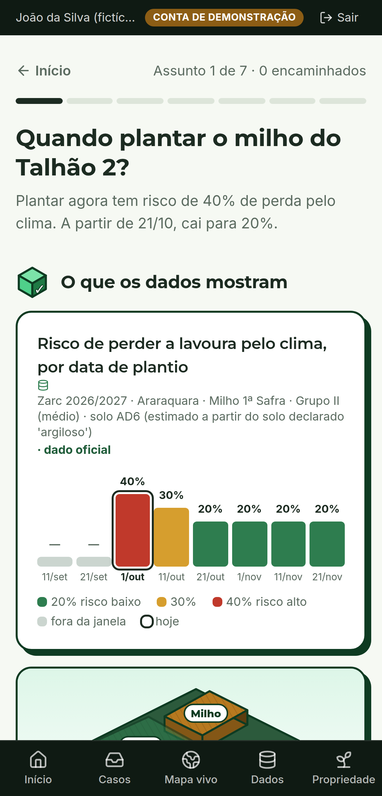
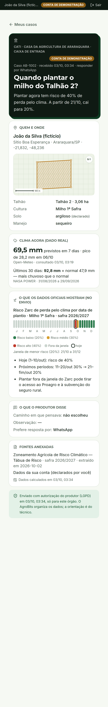

O dado público que já existe,
trabalhando para cada talhão.
Só 1 em cada 5 estabelecimentos rurais
recebeu orientação técnica.
receberam
decidem sozinhos: quando plantar, o que aplicar, como enfrentar o clima.
E a assistência do governo
está encolhendo.
em 11 anos.
Quem mais precisa é
quem menos recebe.
no Nordeste:
menos de 1 em cada 10
no Sul:
quase a metade
Sem técnico, ficam as perguntas.As respostas já existem.
+ IBGE (município e malha) e NASA GIBS (satélite) = 9 bases abertas, de 6 fontes — todas citadas com data no app.
Só que ninguém
consegue usar assim.
em 6 portais diferentes, cada uma num formato: planilha, API, mapa, imagem de satélite
linhas só no Zarc, nas duas últimas safras
geocodigo · dec1 … dec36
códigos no lugar de nomes
Nenhum produtor vai abrir isso.
E a solução para todo esse problema
é o AgroBits.
O AgroBits em ação

pitch/assets/video/agrobits-showcase.mp4
Como funciona, em três passos.

Uma entrevista curta: onde fica, o que planta, e desenha o talhão no mapa.

Os dados oficiais já cruzados para a roça dele, sempre com fonte e data.

Quando precisa, o caso chega pronto na assistência técnica pública.
Conheça o João.
Pequeno produtor de Araraquara/SP.
Sítio Boa Esperança · 10,7 ha
os dados abertos são reais.

registros oficiais no AgroBits
do município e das culturas dele
assuntos para ele, um por vez
O assunto mais urgente:
quando plantar o milho?
- Abre o assunto “Quando plantar o milho do Talhão 2?”
- Vê o dado oficial: 40% de risco hoje, 20% a partir de 21/10ZARC · MAPA
- Compara os caminhos e escolhe esperar a janela
- Autoriza (LGPD) e envia o caso à Casa da Agricultura
- Vê como o técnico recebe

O técnico chega sabendo.
Hoje: visita às cegas
- Onde fica o talhão?
- O que foi plantado? Qual o solo?
- Está na janela do Zarc?
- Choveu? Vai chover?

Com o AgroBits: caso pronto
- Local, talhão, cultura e solo
- Risco do Zarc por data de plantio
- Chuva prevista e × a normal
- Fontes com data e autorização (LGPD)
Triagem à distância, visita quando precisa: mais produtores por técnico — a medir no piloto.
O AgroBits não substitui
o agrônomo.Ele leva o agrônomo até
quem nunca teve um.
Direto em três Objetivos da ONU.
Fome zero e agricultura sustentável
Renda e produtividade do pequeno produtor (2.3). A meta 2.a cita os serviços de extensão rural.
Ação contra a mudança global do clima
Adaptação ao risco climático (13.1): o Zarc é o risco de perder a lavoura pelo clima.
Redução das desigualdades
De 8% no Nordeste a 49% no Sul: o caso pronto encurta essa distância (10.2).
Responsável com cada dado.
Dado real, com fonte e data
Todo número na tela diz de onde veio e quando. Se uma fonte cai, o app avisa — nunca inventa.
Nada pessoal (LGPD)
Seguro rural entra só como total por município, sem grupos menores que 3. O caso só sai com autorização do produtor.
A IA não decide
Ela explica o dado oficial; não dá receita nem dose. Quem orienta é o técnico.
Feito em 24 horas, com uma regra:
nenhum número inventado.
IA como par de programação (Claude); produto, dados e prioridades decididos pela equipe.
Leva o agrônomo até quem nunca teve um.
Próximo passo: piloto com uma Casa da Agricultura (CATI).